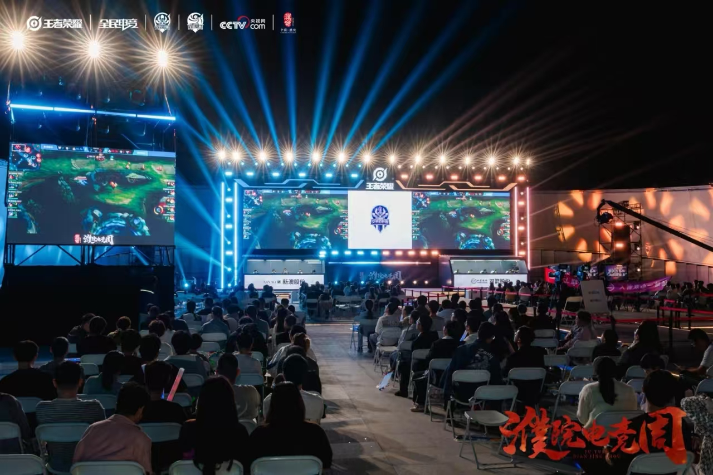
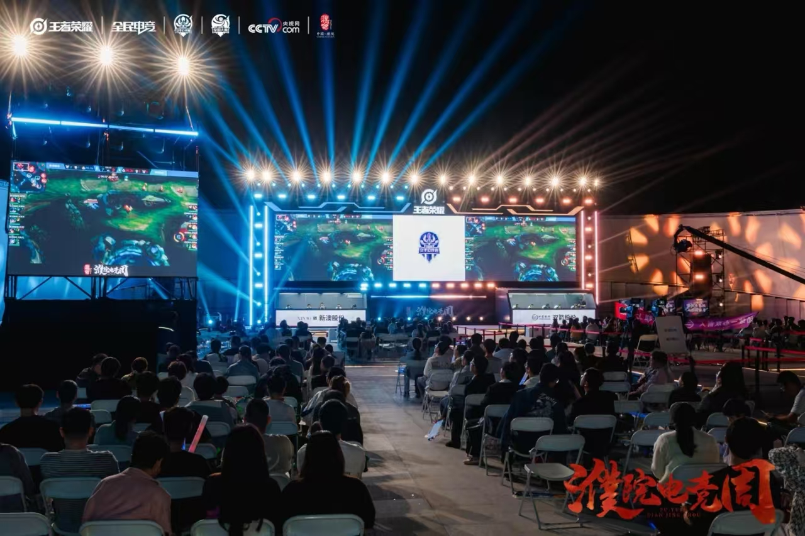

活动介绍
濮院镇作为嘉兴市的一颗闪亮明珠，因其独特的历史文化与现代时尚氛围而日益受到年轻人的喜爱。电竞周的举办，正是紧抓这一机遇，将传统与现代结合，推动古镇的数字化转型。此次电竞周从10月13日正式启动，活动内容丰富多彩，涵盖了行业内最热门的王者荣耀、赛事表演、互动体验等多重元素。
亮点
- 顶级电竞赛事
- 电竞文化展览
- 电竞产业论坛
- 电竞明星见面会
赛事安排
| 日期 | 赛事名称 | 地点 |
|---|---|---|
| 2024年5月1日 | 王者荣耀城市赛 | 濮院体育馆 |
| 2024年5月2日 | 英雄联盟职业联赛 | 濮院会展中心 |
濮院镇作为嘉兴市的一颗闪亮明珠，因其独特的历史文化与现代时尚氛围而日益受到年轻人的喜爱。电竞周的举办，正是紧抓这一机遇，将传统与现代结合，推动古镇的数字化转型。此次电竞周从10月13日正式启动，活动内容丰富多彩，涵盖了行业内最热门的王者荣耀、赛事表演、互动体验等多重元素。
| 日期 | 赛事名称 | 地点 |
|---|---|---|
| 2024年5月1日 | 王者荣耀城市赛 | 濮院体育馆 |
| 2024年5月2日 | 英雄联盟职业联赛 | 濮院会展中心 |